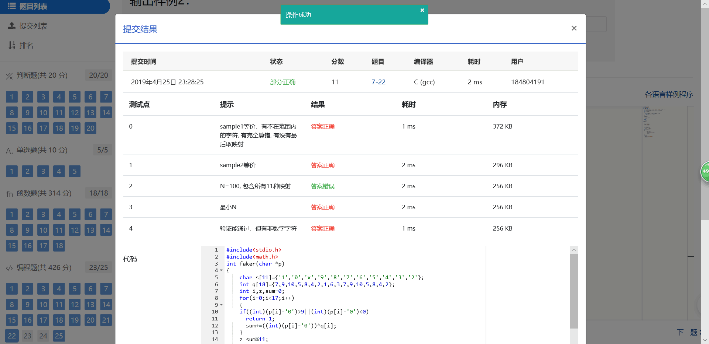

首先对前17位数字加权求和，权重分配为：{7，9，10，5，8，4，2，1，6，3，7，9，10，5，8，4，2}；然后将计算的和对11取模得到值Z；最后按照以下关系对应Z值与校验码M的值：
Z：0 1 2 3 4 5 6 7 8 9 10
M：1 0 X 9 8 7 6 5 4 3 2
现在给定一些身份证号码，请你验证校验码的有效性，并输出有问题的号码。
输入格式：
输入第一行给出正整数N（≤100）是输入的身份证号码的个数。随后N行，每行给出1个18位身份证号码。
输出格式：
按照输入的顺序每行输出1个有问题的身份证号码。这里并不检验前17位是否合理，只检查前17位是否全为数字且最后1位校验码计算准确。如果所有号码都正常，则输出All passed。
输入样例1：
4
320124198808240056
12010X198901011234
110108196711301866
37070419881216001X
输出样例1：
12010X198901011234
110108196711301866
37070419881216001X
输入样例2：
2
320124198808240056
110108196711301862
输出样例2：
All passed
下面是我写的代码：
#include<stdio.h>
#include<math.h>
int faker(char *p)
{
char s[11]={'1','0','x','9','8','7','6','5','4','3','2'};
int q[18]={7,9,10,5,8,4,2,1,6,3,7,9,10,5,8,4,2}; //权重分配数组
int i,z,sum=0;
for(i=0;i<17;i++)
{
if((int)(p[i]-'0')>9||(int)(p[i]-'0')<0) //判断是否有不是数字的字符
return 1;
sum+=((int)(p[i]-'0'))*q[i];
}
z=sum%11;
if(s[z]==p[17])
return 0;
else
return 1;
}
int main()
{
int n,i,cot=1; //cot记录是否有不正常号码
scanf("%d",&n);
char a[n][19];
for(i=0;i<n;i++)
scanf("%s",a[i]);
for(i=0;i<n;i++)
{
if(faker(a[i])) //判断号码是否正常
{
printf("%s\n",a[i]);
cot=0;
}
}
if(cot)
printf("All passed");
return 0;
}
但是测试点 ：N=100, 包含所有11种映射就是过不了，不知道什么原因了，求路过的大神指导下；
